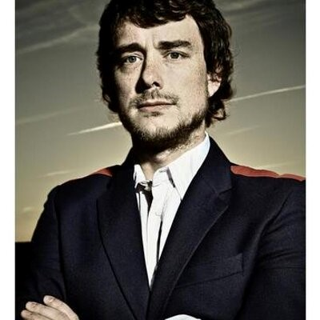

Autores

Nombre: Fernando Domínguez Rubio
Año de nacimiento: Unknow
Lugar de nacimiento: Unknow
Sociólogo cuyas líneas de investigación se orientan hacia la ciencia y tecnología, la antropología, el arte, los estudios urbanos y la arquitectura.
Actualmente Investigador Post-Doctoral Marie Curie Post-Doctoral Fellow en la New York University (NYU) y el Centre for Research on Socio-Cultural Change (CRESC) y profesor en el Departamento de Comunicación en la Universidad de California, San Diego.
Concretamente, sus investigaciones se centran en el estudio de los ambientes, prácticas, tecnologías e infraestructuras a través de las cuales las diferentes formas de la subjetividad y la objetividad se producen de forma contingente en lugares específicos. Se encuentra particularmente interesado en los nuevos regímenes de objetualidad y la personalidad, es decir, nuevas formas de producir, comunicar y reproducir ‘objetos’ y ‘personas’- emergiendo de tecnologías e infraestructuras contemporáneas.
Su investigación se centra en el estudio de las condiciones infraestructurales y ecológicas que permiten la reproducción de distintas formas de subjetividad y objetividad.
Su principal proyecto tiene que ver con el desarrollo de un enfoque ecológico para el estudio de las formas culturales y categorías. Este proyecto se basa principalmente en una exploración etnográfica del backstage del MoMA, donde explora las ecologías materiales necesarias para mantener la legibilidad de obras de arte como objetos valiosos, «poseíbles» y significativos.
Además de este trabajo, también desarrolla una serie de proyectos de investigación acerca de las dimensiones políticas de infraestructuras físicas y digitales contemporáneas. Por último, también está interesado en el desarrollo de metodologías experimentales basadas en el uso estratégico de la ficción. Es también uno de los editores del blog Material World Blog y coautor del libro “The Politics Of Knowledge”.

Nombre: Uriel Fogué
Año de nacimiento: 1976
Lugar de nacimiento: Madrid, España.
Uriel Fogué es doctor arquitecto por la UPM (tesis doctoral fue premio extraordinario, 2014-15 y también tesis finalista en la X Bienal Iberoamericana de Arquitectura y Urbanismo, 2016). Actualmente, es profesor de proyectos arquitectónicos en la École Polytechnique Fédérale de Lausanne (EPFL), la Escuela Técnica Superior de Arquitectura de Madrid (UPM) y la Universidad Europea de Madrid (UEM). Desde el 2006 codirige la oficina de arquitectura elii y es miembro fundador del grupo de discusión y debate Gabinete de Crisis de Ficciones Políticas, desde 2012. Es coeditor del libro: Planos de intersección: materiales para un diálogo entre filosofía y arquitectura (Lampreave, 2011, con Luis Arenas). Y coeditor de la publicación UHF (junto al colectivo UHF), incluida en el Archivo de Creadores de Madrid. Entre sus trabajos se destaca el libro “Las arquitecturas del fin del mundo”, una recopilación ensayos del mismo.
Autor:

Nombre: Evan Roth
Año de nacimiento: Michigan, Estados Unidos
Lugar de nacimiento: 1978
Evan Roth, es un artista estadounidense que aplica la filosofía del “hackeo” en la práctica de las artes visuales en periodos de corta duración en el espacio público, “online”, y en dentro de la cultura popular. Tiene un título en arquitectura de la Universidad de Maryland y un MFA de la Communication, Design and Technology School en Parsons The New School for Design. Después de graduarse, trabajó en el Eyebeam OpenLab, un laboratorio de tecnología creativa de código abierto para el dominio público como becario de investigación y desarrollo de 2005 a 2006 y miembro principal de 2006 a 2007. En 2007, cofundó el Free Art and Technology Lab (F.A.T. Lab), un colectivo de arte y tecnología basado en Internet dedicado a la intersección de la piratería de código abierto y la cultura popular. Ha trabajado bajo el seudónimo fi5e Roth y Ben Engebreth fueron premiados con un 2007 Rhizome Commission for White Glove Tracking, que fue presentado en el Contemporary New Museum in New York City. Evan Roth fue luego, nuevamente ganador, del Rhizome Commission in 2008 por su proyecto "T.S.A. Communications". Un gran porcentaje de sus trabajos forman parte de la colección permanente del Museum of Modern Art. El 2012, fue premiado con el Smithsonian Cooper-Hewitt National Design Award.